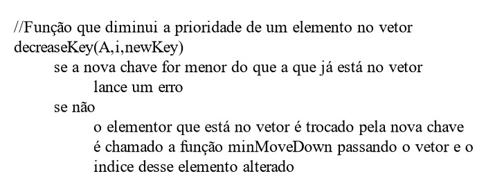
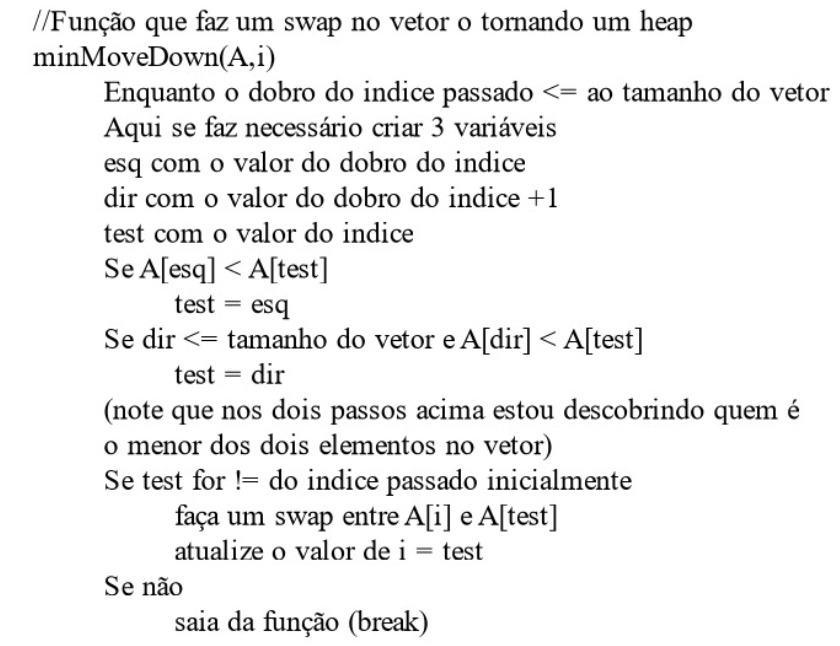
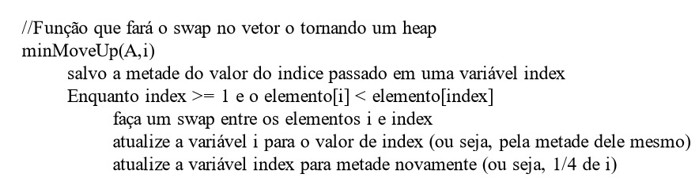
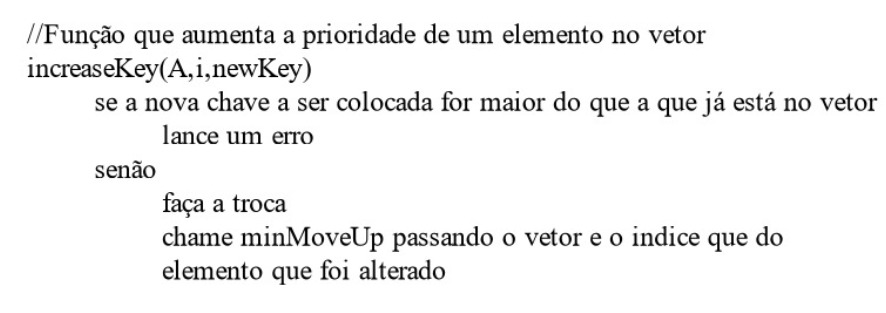
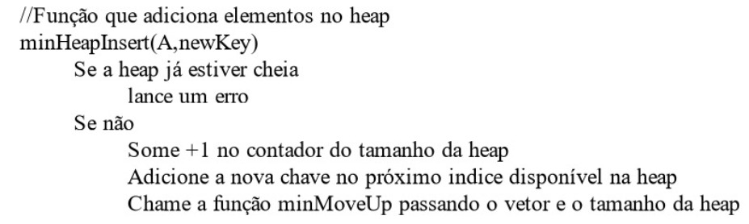
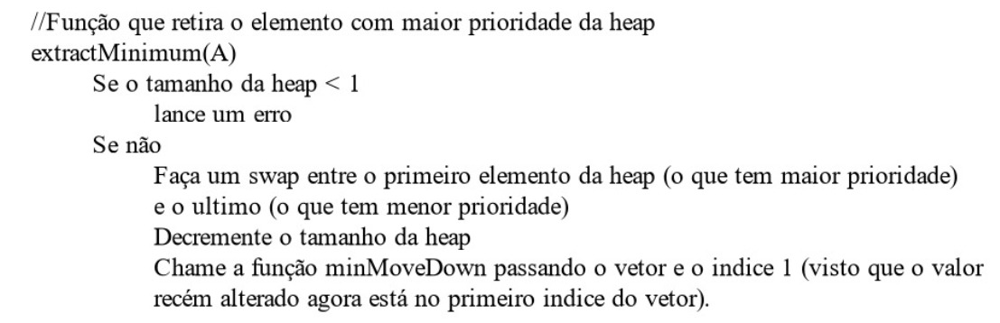
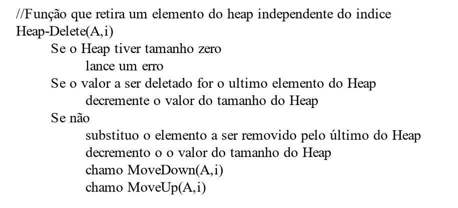

Avaliação 07 - Filas de prioridade
Questão 1: Escreva pseudocódigos para os procedimentos decreaseKey(A,i,newKey), minMoveDown(A, i), minMoveUp(A,i), increaseKey(A,i,newKey), minHeapInsert(A,key) e extractMinimum(A), que implementem uma fila de prioridade mínima com um heap de mínimo. Obs.: Note que todos esses procedimentos são versões similares às vistas em sala, só que aqui estou pedindo para uma fila de prioridades mínima.
decreaseKey(A,i,newKey)
minMoveDown(A,i)
minMoveUp(A,i)
increaseKey(A,i,newKey)
minHeapInsert(A,key)
extractMinimum(A)
Questão 2: Seja A um heap de máximo. A operação HEAP-DELETE(A, i) elimina o item no nó i do heap A. Dê uma implementação correta de HEAP-DELETE(A,i) que seja executada no tempo O(lgn)para um heap de máximo de n elementos.

Questão 3: Um heap d-ário é semelhante a um heap binário, mas (com uma única exceção possível) nós que não são folhas têm d filhos em vez de dois filhos.
a)Como você representaria um heap d-ário de máximo em um vetor? Justifique.
b)Qual é a altura de um heap d-ário de n elementos em termos de n e d? Justifique.
c)Dê uma implementação eficiente de EXTRACT-MAXIMUM() em um heap de máximo d-ário. Analise seu tempo de execução em termos de d e n.
a)Provavelmente este Heap seja um pouco mais confuso de se observar como uma árvore. Mas a propriedade que eu manteria seria: ∀i{ A[⌈i/d⌉] ≥ A[i] | 2 ≤ i ≤ n}. O que eu faria também é um novo atributo na hora de criar essa Heap. Além de todos os atributos que já vimos no construtor que construímos em sala, eu pediria também como parâmetro o 'd', para que toda o resto da minha implementação fizesse uso desse novo parâmetro. Eu pensei nessa propriedade pois realizei alguns estudos de caso e vi que a propriedade se mantia e que o Heap continuava sendo de máximo.
b)Como um Heap se comporta como uma árvore completa (se N é uma folha, então N está no penúltimo ou último nível) e árvores completas com N nós (N > 0) possuem altura h = 1 + ⌊lg2 n⌋ (por um lema que o próprio professor já provou quando estudavamos árvores binárias) logo o Heap também terá sua altura similar a este cálculo, sua altura h = 1 + ⌊lgd n⌋. Note que aqui se faria necessário novamenter ter conhecimento desse 'd', como citado no item acima, o pediria como parâmetro.
c)
Como já mencionado antes, na criação desse Heap torna-se essêncial passar 'd' como parâmetro no construtor. Segue abaixo o código que pensei:
 pt1.jpeg)
 pt2.jpeg)
 pt3.jpeg)
Analise em termos de 'd' e 'n':
Começando que a função a ser chamada será a extractMaximum(Heap,d). Está função tem complexidade:
O(1) - da linha 39 a 41, na 43,44,45,46 e também na linha 49
A complexidade da linha 47 é a chamada da função moveDown(Heap,0,d), portanto, cabe analise da mesma.
O(1) - nas linhas 18 e 19 (A função primeiroFilho(i,d) tem complexidade O(1))
O 'for' da linha 21 tem complexidade O(d). Note que mesmo com a chamada da função irmaos(filho,d)(que tem complexidade O(1)), O(d) se mantém.
Na linha 33 até a 36 também segue como O(1).
Porém na linha 37 ocorre uma chamada recursiva na função, que como já dito em comentário no código, equivale ao while e atualização da variável i. Por sua vez, a chamada recursiva, em seu pior caso, ocorre até que o elemento que está no primeiro indice vá até uma folha. Portanto sua complexidade é O(lgd n).
Agora basta fazer o somatório:
O(1) várias vezes (que irei abstrair) + O(d) + O(lgd n). Como eu sei que d < n, a complexidade da função é O(lgd n).